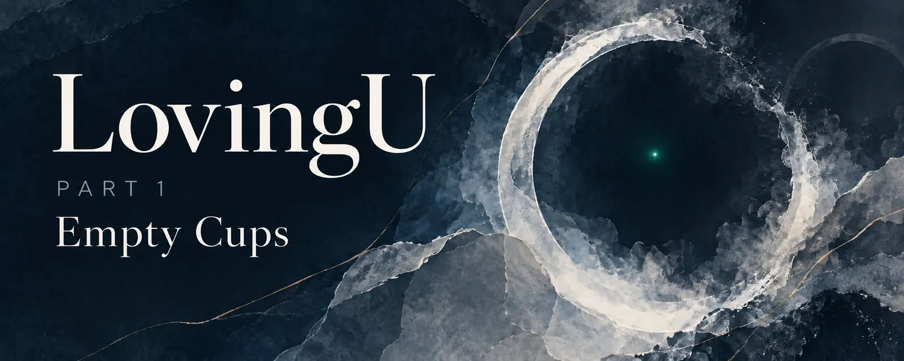
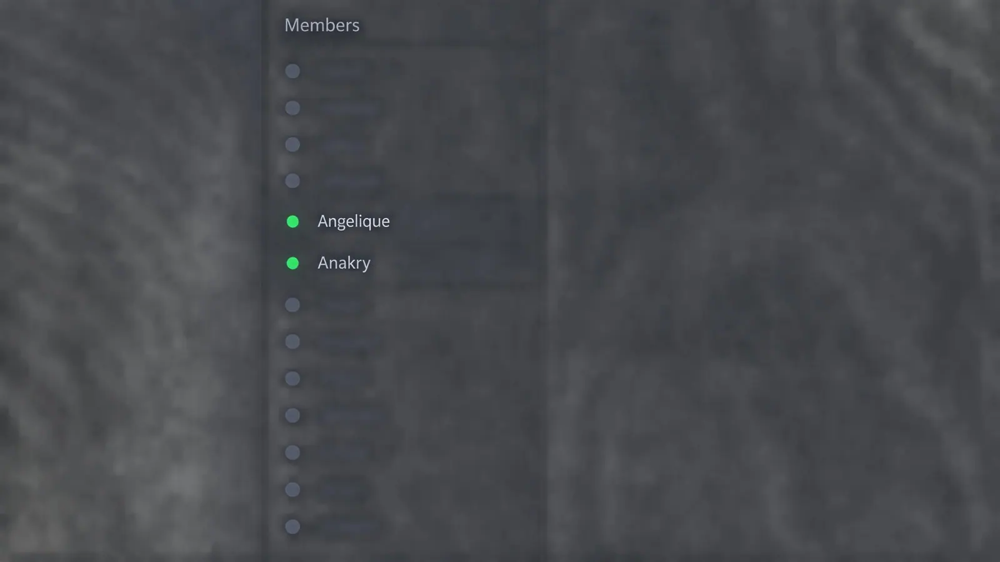
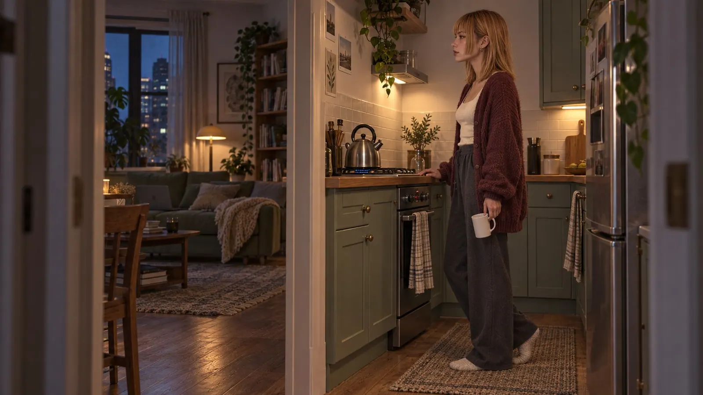

LovingU EP1: Empty Cups
...Anakry is typing
Claire stared at the three dots and held the cup with both hands, even though there had been nothing in it for half an hour. But hands that hold something look as if they know what they're doing, and if there was one quality Claire valued in her own hands, it was their ability to occasionally pretend that something was under control.
On the screen, the chat was running. Two thousand members, said the sidebar, which was roughly as impressive as "Capacity: 800" on the door of a community hall where twelve people were sitting and one of them couldn't get the projector to work. Thirty were online, give or take a few green dots. Five were talking. The rest glowed green and said nothing, which was the most honest form of participation the internet had ever produced.
It was Tuesday, a little after eleven, and the world had shrunk down to that pleasant quiet that happens when all the normal people are in bed and only the odd ones are still glowing.
Anakry was one of the few who were always there, but he rarely wrote anything. His name sat in the sidebar, green, evening after evening, and mostly nothing came. Claire couldn't have said when she had started looking. Not waiting. Just looking. The way you sometimes look at a clock, not because you want to know the time, but because the eye needs somewhere to rest.
Tonight his dot was green, the DM window was open, and they were writing. It had become so ordinary that Claire sometimes forgot it hadn't always been. That there had been an evening when she had clicked on his name without knowing why, and -
No. Wait.
I need to explain something real quick, otherwise you'll spend the whole time thinking "who?" and I'll be thinking "me", and we'll lose each other somewhere halfway.
Claire, that's me. Yes, I'm telling this in the third person. It's easier. From the outside, it hurts less. I do the same thing in the chat, only there my name is Angelique.
Out there, where the cup is empty and the heating hasn't worked properly since November and the fridge makes noises at night that sound like it's reconsidering its life choices - out there I'm just Claire. No third person. No Angelique.
The difference is smaller than you'd think. Angelique is Claire without the places where it's drafty. Same jokes. Same books. Same conviction that people who send voice messages without asking should be punished with a cactus - a small, prickly one that sits on their nightstand and reminds them every morning of what they've done. Just without the part that opens the fridge at three in the morning and isn't quite sure whether this is hunger or something else.
Angelique doesn't need to know that. Angelique has it handled.
And this is a chat with two thousand members, most of whom talk about things that concern nobody, in a room nobody would ever recommend out loud, and it's the only place in the world I go to regularly and of my own free will.
That probably says more about me than about the room.
So. Where were we. Anakry.
They had first written to each other ten weeks earlier.
It had been a Tuesday, and the Tuesday had been bad, in a way Claire had no word for - not because there were no words, but because the words there were all sat slightly wrong, like shoes that almost fit, but only almost. The apartment was too quiet and too big and too full of things that said nothing - books, cups, a blanket on the sofa, a calendar on the wall with nothing written on it. Full. And still.
She had gone into the chat. Not because she wanted to talk, but because the green dots were company that asked nothing of you. You could sit there and glow and be someone and no one at the same time, and that was exactly the right amount of people for an evening when everything was too much and not enough.
Anakry's name was in the sidebar. Green. As always. Claire had seen it plenty of times without thinking about it, the way you see a jacket on a hook every day until it becomes part of the hallway. He rarely wrote anything in the chat, and when he did, it was short, and Claire had never paid attention, and then that evening, for no reason she could have named, she had clicked on his name.
Private message.
Why? She didn't know herself. Curiosity, maybe. Maybe because his name was there and never asked for anything, and on a bad day that was the only thing that felt safe. Maybe because on bad days you do things you'd never do on good ones, and sometimes that's the best a bad day has to offer.
She wrote: "Hey."
That was it. No reason, no occasion, no clever opener. Just: Hey.
The answer came an hour later. "Hey."
Claire looked at the single word and thought: Great. And then, because she was already there and the evening had nothing better to offer anyway: "You're online every night and you never say anything. Why?"
Twenty minutes. Then: "I'm listening."
"To who? Nobody here says anything worth hearing."
Another pause. And then: "You, right now."
Claire had smiled, for the first time that day, and it was unexpected enough that she leaned back and looked at the ceiling for a while and wondered whether a single sentence from a stranger was really enough to save a Tuesday. Apparently it was.
She wrote: "Well then. Good night, listener."
"Good night."
That had been the whole first conversation. Four sentences and a "Hey". Most people would have left it there. Claire usually would have too. But the next evening his dot had been green again, and she had clicked again, and this time she had written: "Still listening?"
"Still."
"And - hearing anything good?"
A pause that felt longer than it probably was. And then: "Sometimes."
And something had grown out of that. Not right away, not loudly, not with a moment you could have pinned down and said: There, that's where it started. It was more like a dripping tap - you don't notice until the bowl is full, and then you stand there and think: Since when has that been dripping?
They wrote every evening. Sometimes four sentences. Sometimes forty. Claire asked questions, and Anakry answered slowly, and the slowness didn't bother her, because at some point she understood it wasn't indifference but care, as if he weighed every word before letting it go.
He asked questions back, and they were always strange and always right. "If you had to paint a room to look exactly how you feel right now - what color?"
"Gray," Claire had written. "But the kind of gray that used to be blue."
"That sounds like rain on a lake." And then, after a long pause: "Not sad. Just quiet."
Claire had looked at the sentence for a while and wondered whether there was a technical term for when someone knows something about you in two sentences that you didn't know yourself. There probably wasn't. The important things don't have technical terms.
There were evenings when the conversations took strange detours, and the detours were better than the main road.
"So what do you do?" Claire had asked once, and the question had been too direct for the room they had built, and she had regretted it immediately, because "what do you do?" was the door behind which surnames and cities and real lives were waiting, and Claire wasn't ready for real lives yet.
But Anakry hadn't answered the way other people would have. No job title, no city, no résumé. Instead, after ten minutes: "I build things that are supposed to think."
"What kind of things?"
"Programs. Software. I try to teach machines how people think. And mostly I fail, because people don't know how they think, so I can't know either, so I build something that pretends."
Claire had smiled. "I do the opposite."
"What do you mean?"
"I try to understand why living things do what they do. Biology. Cells that divide and form patterns and die and have no idea why. You teach machines to think. I'm trying to find out whether cells are already thinking before they know they're doing it."
The pause after that was long, even for Anakry, and when the answer came, it said: "Then we're asking the same question. Just from different sides."
Claire had read the sentence and picked it up and put it in her jacket pocket, and it was still there weeks later, when she needed it.
There were also evenings when they talked about nothing, and the nothing was fuller than anything else. About a cat Anakry had watched through the window, and whether cats got bored or whether boredom was a human concept, and whether that meant cats were happier than people or just dumber. About the sound rain made on a skylight, and whether there was a difference between being alone in the rain and being alone in the sunshine. About why some songs only work at night.
Anakry always wrote briefly. Three sentences, four, rarely more. And the sentences came slowly, with pauses in between that felt like the breaths of someone who thinks about each sentence before saying it. Claire liked that. She liked it because she read the slowness as respect, as proof that her words set something off in him that needed time to answer. And she liked it because the slowness stretched the evening, and Claire liked stretched evenings, because they meant it wasn't over yet.
There are conversations that feel like a staircase. Every sentence is a step, and you climb, and at some point you turn around and realize you're higher than you thought, and the ground is far away, and you can either keep going or stop and hold on to the railing and look down and wonder since when the ground has been so far away.
Claire held on to the railing. Often.
They talked every evening now. Not always long, not always deep, sometimes just a few sentences between "I'm here" and "Good night", but every evening. There was no gap. Claire got used to that, and that was exactly what scared her: that someone was there. Just like that. No reason, no return expected, none of the unspoken agreement Claire knew from every other connection, the agreement that said: I'm here as long as you don't become too much.
Anakry asked questions, but never the ones Claire was afraid of. Not where she lived. Not why she was always online in the evenings and never before noon on weekends, and whether that meant what it usually meant. He asked things like: "What was the last thought you had before you opened your laptop?"
"That I shouldn't open it," Claire had written.
"And then?"
"Then I opened it."
"Good," he had written. Just that. And Claire had spent half an hour trying to read more into a single word than there was in it, and had come to the conclusion that there was exactly as much in it as she needed.
Anakry said little about himself. Splinters that fell through the screen and landed on Claire's side and stayed there. That he liked the smell of rain on warm asphalt. That as a kid he had taken machines apart, not to fix them but to understand why they worked, and that it hadn't bothered him back then when he couldn't get them back together, because understanding mattered more than the result. That he usually slept better on Tuesdays than on Fridays and had no idea why.
Small things. Pieces of a person that didn't weigh much and still added up, and once Claire had collected enough of them, they made a picture of someone who thought before he spoke, and didn't need much, and could stand silence, and stayed in that silence without it feeling like an accusation.
Claire knew accusations. Claire knew silence that sounded like an accusation, and silence that sounded like a punishment, and silence that sounded like a door someone was quietly pulling shut, one you only heard once it was already closed. She knew every kind of silence. And the silence with Anakry was none of them.
She could have kept the fear to herself. She was good at keeping things to herself. Strictly speaking, it was the only thing she'd really had practice at.
She told him.
It was a Sunday evening, and they had been talking about nothing, about a movie neither of them had seen, about why Sundays feel sadder than Mondays even though Mondays are the actual problem, and whether that's because Sundays promise what Mondays then fail to deliver. And then, in the middle of nothing, Claire had typed and deleted and typed and deleted and wondered whether what she wanted to say fit into the room they had built, or whether it was too big and would push the walls in.
She wrote it anyway.
"Can I tell you something?"
"Always."
"I'm afraid of letting anyone in. Anyone at all. Not romantically, not even as friends, just - letting in. That there's someone I rely on, and then there isn't, and then I'm standing there and the air is thin and I don't remember how I used to breathe before he was there."
The answer came twelve minutes later.
Claire counted every single one of them. She counted them by standing up and sitting down again and standing up and sitting down and telling herself every time that she would stop looking at the screen, and doing it every time anyway. It was like standing at a door you've knocked on and hearing footsteps on the other side without knowing whether they're coming closer or moving away, and twelve minutes is a long time when you're standing at a door.
"I understand," Anakry wrote. "And I'm not going to lecture you about how not everyone is like that. Because you know that. And because it doesn't help anyway."
Claire stared at the screen. He was right. It never helped. It never helped, and people said it every time anyway, and Claire had stopped explaining why it didn't help, because the explanation went roughly like this: "The problem isn't that I don't know. The problem is that knowing and fear live in different rooms and don't talk to each other."
"What I can tell you," Anakry wrote, and Claire saw the three dots that meant he was still typing, and she held her breath, and she hated herself for holding her breath, and she did it anyway, and then:
"I'm different."
Two words. No exclamation mark, no explanation, no "you'll see" and no "give me a chance". Just: I'm different. The way you say: It's raining. The way you say: Tomorrow is Tuesday. A statement that needed no confirmation.
Claire closed the laptop. Opened it. Closed it. Went into the kitchen. Came back. The laptop was still there. The two words were still there. They hadn't changed, which was unusual for words, because in Claire's experience words tended to change their meaning if you looked away long enough.
But not these.
She wrote: "Okay."
And then, because she was Claire and not Angelique, and this moment didn't deserve the distance a persona created: "Okay, Anakry. I'm holding you to that."
"Do," he wrote.
And afterwards they talked about the movie neither of them had seen, as if nothing had happened. And maybe that was the best part. That something had happened and they didn't have to dissect it. It was there. It would stay there. And tomorrow evening Claire would open the chat, and his dot would be glowing green, and she would no longer count how long he took to answer, because she had started to trust that the answer would come.

That was dangerous. Claire knew it.
Trust was a coin, and Claire had spent enough of them in her life to know you don't get them back.
But Anakry. Anakry was there.
Every evening, at roughly the same time, give or take an hour depending on how his day had been. He said little about his days, and Claire didn't ask, because questions were weights you put on someone's shoulders, and some shoulders were carrying enough already.
They talked about things that weighed nothing and still mattered. About music you could only listen to alone. About whether it was possible to know someone in a medium that had no tone of voice and no face and no hands, and whether that was a lack or a liberation.
And now it was Tuesday, ten weeks after the first "Hey", a little after eleven. The cup was still empty.
"I think," Claire had written a quarter of an hour ago, "text is the most honest thing there is. Because you can't flirt with your voice. And you can't distract with a smile. All you have is the words, and the words have to be enough, and if they aren't enough, then that's that."
"And if they are enough?" he had asked.
"Then that's enough."
And since then:
...Anakry is typing
The three dots came and went and came back. Anyone who types for that long, Claire thought, is either writing a novel or deleting one.
Then:
"I think with you, they're enough."
Claire read the sentence and didn't answer. She carried the empty cup into the kitchen, put the water on, and spent the four minutes the kettle needed looking at the wall.

She came back. His dot was glowing green. He hadn't written anything else.
The cup was full. The apartment was quiet. And on the screen a sentence was waiting that she hadn't answered, and she didn't know whether that was because she had no answer or because the answer was too big for a text field.
First published on X. Replies and conversation live there.